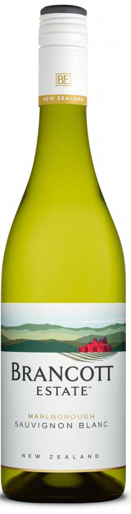

Вино Brancott
 КупитьОписание товара
| Вино: | Белое, сухое |
| Регион: | Новая Зеландия, Мальборо |
| Производитель: | Pernod Ricard |
| Крепость: | 13% |
| Объем: | 0.75 л |
| Виноград: | Совиньон Блан: 100% |
Характеристики товара
- Цвет
Вино нежного светло-соломенного цвета с зеленоватыми бликами. - Вкус
Вино обладает насыщенным фруктовым вкусом с цитрусовыми нотами, приятной хрустящей кислотностью и мягким послевкусием. - Аромат
В богатом аромате вина преобладают яркие ноты цитрусовых, среди которых доминирует розовый грейпфрут, дополненные легкими оттенками перца и свежескошенной травы. - Гастрономические сочетания
Вино прекрасно в качестве аперитива, хорошо сочетается со всеми видами сыров, особенно с пармезаном и козьим сыром, морепродуктами, рыбными блюдами (прежде всего из камбалы и палтуса) и блюдами из нежного мяса птицы.
Подробное описание товара
Brancott Estate, Marlborough Sauvignon Blanc — необычайно яркое и насыщенное вино, произведенное из винограда, выращенного в уникальном терруаре новозеландского региона Мальборо. Совиньон Блан выращивается на виноградниках, расположенных в южной части долины Вайрау. Сбор начинается середине марта, а заканчивается — в середине апреля. Свежий фруктовый вкус вина многим обязан специальной технологии винификации. Один из главных моментов винификации — чрезвычайно тщательный и мягкий отжим плодов с целью получения чистого, прозрачного сока для ферментации, которая проходит при низкой температуре в стальных емкостях.